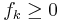
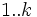
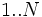
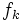

![[Main Page]](../../rsrc/bci2000logo.svg)
BlockRandSeq Class
Programming Reference
Location
BCI2000/srcrc/shared/modules/application/utils
Synopsis
The BlockRandSeq class generates block randomized sequences. Sequences may be specified by
- the number of elements, or
- a list of absolute frequencies.
In the first case, the generated sequence will consist of random permutations of the numbers 1..N, following each other indefinitely. In the second case, the generated sequence will be specified by a list of frequencies  for the numbers , and the sequence itself consist of random permutations of the number sequence  with each number repeated  times.
Properties
For each property, there is a getter method carrying the plain property name. Writable properties have an additional setter method prefixed with "Set".
int BlockSize (rw)
The length of a block, i.e. the number of elements in the output before the next permutation begins.
list Frequencies (r)
A list of frequencies as specified above. The actual list argument to the setter function may be any STL container class.
Methods
BlockRandSeq( RandomGenerator& )
The BlockRandSeq object uses a RandomGenerator object to determine random permutations. In the constructor, a reference to a valid RandomGenerator object must be specified. This RandomGenerator object must remain valid during the entire lifetime of the BlockRandSeq object.
unsigned int NextElement()
Returns the next element in the block randomized sequence.
See also
Programming Reference:ApplicationBase Class, Programming Reference:RandomGenerator Class